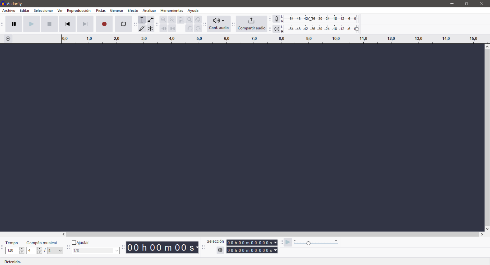
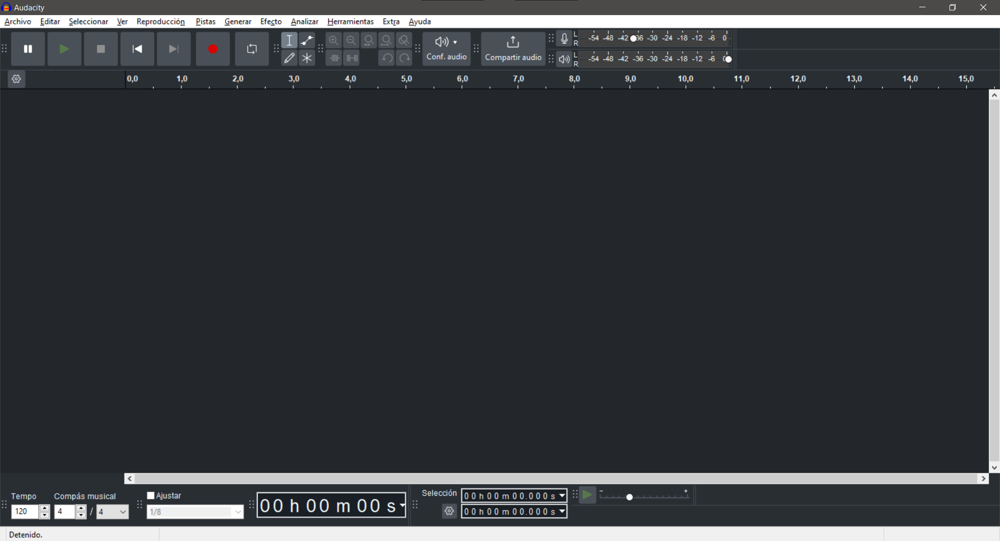
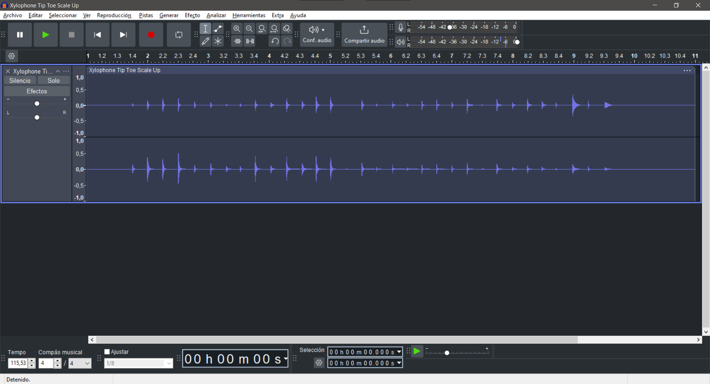
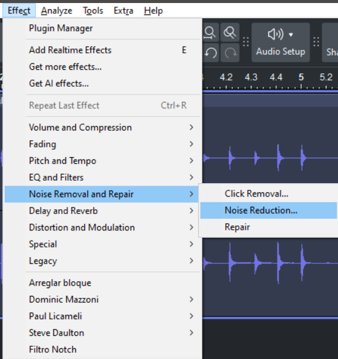

Instalación y descarga
Apoyándonos en la herramienta de portable apps, nos podemos encontrar con una serie de pogramas muy interesantes que nos ayudan para desarrollar efectos especiales de audio, Uno es Audacity y el otro es LMMS.
Lo primero es descargarlos e instalarlos en versión portable y se veran desde la aplicación así:
00
Antes de ejecutar Audacity vamos a grabar una serie de sonidos que modificaremos con Audacity, en grupo de 3 o 2 alumnos generar 20 sonidos, graBados con celular y transferirlos al equipo de computo.
Audacity
Cuando iniciamos el programa el aspecto es así
Vamos a configurar nuestra interfaz
En el menu editar, le damos click y buscamos la opción de Preferencias o CTRL+P en interfaz el idioma lo cambiamos a ingles y prueba la opción de tema obscuro.

Así se ve el programa con un archivo de audio cargado
Para cargar todas las herramientas del programa nos vamos a View >> Toolbars y obtendremos esto

Uno de los efectos que se usa para reducir el ruido de la grabación es Noise Reduction
